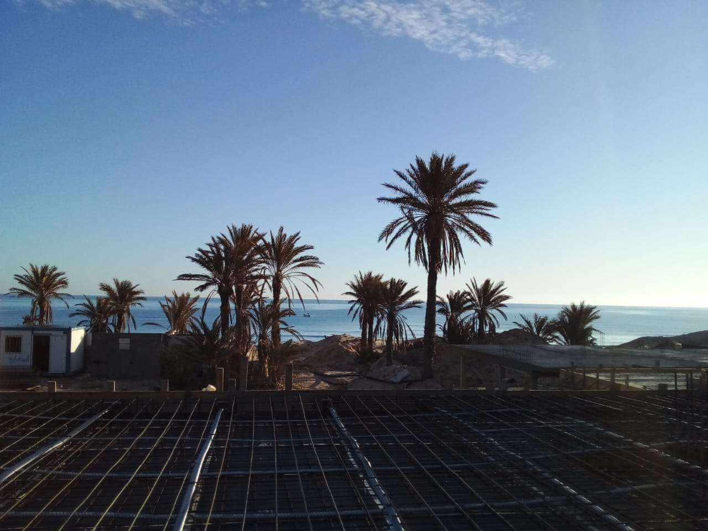

01
Urbanisation et constructions
La densification de certaines zones, les constructions anarchiques et le non-respect des règles d'urbanisme peuvent modifier les paysages et les ensembles architecturaux traditionnels.